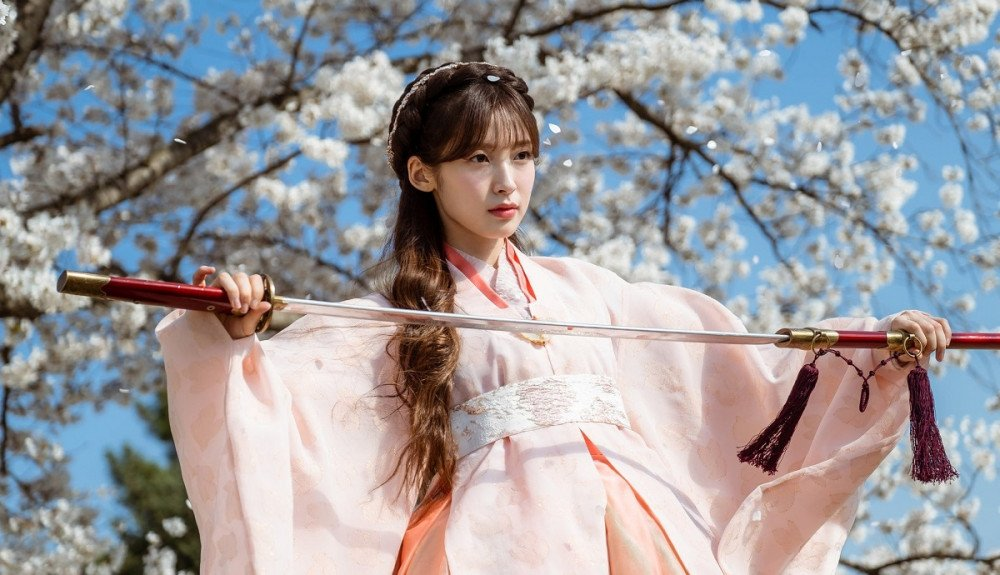

Alchemy of Souls
My K-Drama Recommendation for 2022!


Alchemy of Souls is what I binged watch throughout August-September. I am glad it ended right before school started. All the episodes are already posted on Netflix, so you will not get bored waiting for the next one. Overall, the series was delightful! It includes an exciting plot, attractive casts, and high-class clothes. I personally loved Jin Cho Yeon's clothes. I can not wait for season 2, especially after the plot twist at the end!